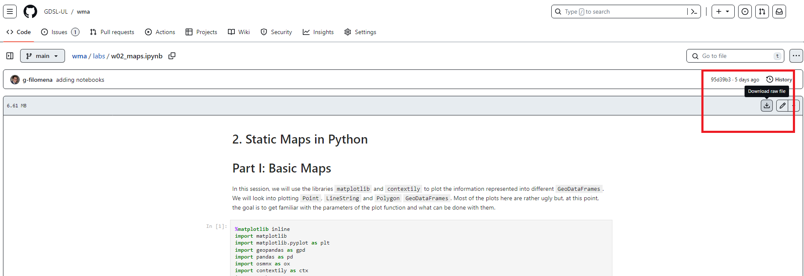
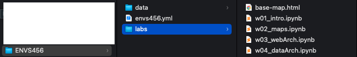
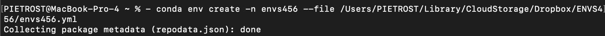

Setting up the Working Environment
Follow the instructions for yuour Operating System and test your installation. If you experience any issues, write a message on the Ms Teams channel of the module. Setting up the Python environment is necessary for:
- Executing the Jupyter Notebooks of the Lab sessions of the course.
- Preparing your own Jupyter Notebooks for the assignments (one each).
We will use Minconda to handle our working environment. Miniconda is a free minimal installer for conda. It is a small bootstrap version of Anaconda that includes only conda, Python, the packages they both depend on, and a small number of other useful packages (like pip, zlib, and a few others)
Set up Miniconda (and Python) on Ms Windows
Installation
- Install Miniconda:
- Option 1: On a UoL Machine: Download and install Miniconda from here. This will install Miniconda and Python in
C:\. If this process is aborted because it requires administrator rights, pressStart, selectInstall University Applications, type and chooseMiniconda. - Option 2, Recommended: Install Miniconda on your personal Laptop: Follow the instructions here.
- Option 1: On a UoL Machine: Download and install Miniconda from here. This will install Miniconda and Python in
- During the installation, leave the default settings. In particular, when asked whom to “Install Miniconda for”, choose “Just for me”.
Important: If you do choose to work on University Machines you will have to reinstall Miniconda every lab session unless you use a PC where Miniconda has been installed already.
Alternatively, you can work on the lab notebooks directly on the web. This does not require to install Miniconda. However, it represents a much slower option, especially when setting up the environment. To do so, you can access the data and the lab notebooks in the \labs directory from a virtual copy of the course repository here. If you opt for this option, you do not need to follow the rest of the instructions below.
Set up the Directories
- Create a folder where you want to keep your work conducted throughout this course. For example, call it
envs456. You can save it wherever you want. If you are working on a university machine, it could be worth creating it inM:/, which should your “virtual” hard-disk. - Download the data and the images for running and rendering the jupyter notebooks.
- Unzip the folders and move the nested folders into the folder
envs456. - Create another folder called
labs
The folder structure should look like:
envs456/
├── data/
├── labs_img/
└── labs/Set up the Python Environment
- Download the
envs456.ymlfrom GitHub by clicikingDownload raw file, top right at this page - Save it in the folder
envs456created before. - Type in the search bar and find the
Anaconda Prompt (miniconda 3). Launch it. The terminal should appear.
- In the Anaconda Terminal write:
conda env create -n envs456 --file C:\envs456\envs456.ymland pressEnter; if the file is located elsewhere you’ll need to use the corresponding file path. - If you are prompted any questions, press
y. This process will install all the packages necessary to carry out the lab sessions. - In the Anaconda Terminal write
conda activate envs456and pressEnter. This activates your working environment. - Necessary on University machines, otherwise Optional: Configuration of Jupyter Notebooks
- In the Anaconda Terminal, write
jupyter server --generate-configand press enter. This, at least in Windows, should create a file to:C:\Users\username\.jupyter\jupyter_server_config.py. - Open the file with a text editor (e.g. Notepad++), do a
ctrl-fsearch for:c.ServerApp.root_dir, uncomment it by removing the and change it toc.ServerApp.notebook_dir = 'C:\\your\\new\\path, for example the directory where you created theenvs456folder. In the University Machines, it is advised to work on the directoryM:\. - Save the file and close it.
- In the Anaconda Terminal, write
Start a Lab Session
- Download the Jupyter Notebook of the session in your folder. Choose one jupyter notebook and click
Dowload raw fileas shown below

- Save the file in the
labsfolder within yourenvs456folder on your machine. - Type in the search bar, find and open the
Anaconda Prompt (miniconda 3). - In the Anaconda Terminal write and run
conda activate envs456. - In the Anaconda Terminal write and run
jupyter notebook. This should open Jupyter Notebook in your default browser.
- Navigate to your course folder in and double click on the notebook downloaded in step 1.
- You can now work on your copy of the notebook.
Follow these instructions and test your installation prior to the first Lab Session (Wed, 31st of January). If you experience any issues, write a message on the Ms Teams channel of the module. Setting up the Python environment is necessary for:
- Executing the Jupyter Notebooks of the Lab sessions of the course.
- Preparing your own Jupyter Notebooks for the assignments (one each).
Set up Miniconda (and Python) on MAC
Installation
To install Miniconda on your personal laptop, Follow the instructions here. During the installation, leave the default settings. In particular, when asked whom to “Install Miniconda for”, choose “Just for me”.
Set up the Directories
- Create a folder where you want to keep your work conducted throughout this course. For example, call it
envs456. You can save it wherever you want. For example, Elisabetta has named her folderenvs456and it’s in her Dropbox inUsers/PIETROST/Library/CloudStorage/Dropbox/envs456 - Download the data and the images for running and rendering the jupyter notebooks.
- Unzip the folders and move the nested folders into the folder
envs456. - Create another folder called
labs
The folder structure should look like:
envs456/
├── data/
├── labs_img/
└── labs/
Set up the Python Environment
- Download the
envs456.ymlfrom GitHub by clicikingDownload raw file, top right, at this page - Save it in the folder
envs456created before. - Type in the search bar and open the Terminal.
- In the Terminal write
conda env create -n envs456 --file envs456.ymland pressEnter. This will need to be modified according to where you placed theenvs456folder. For example, Elisabetta has named her folderenvs456and it’s in her Dropbox inUsers/PIETROST/Library/CloudStorage/Dropbox/envs456/envs456.yml. If you created theenvs456folder on your desktop, the path would beDesktop/envs456.

- If you are prompted any questions, press
y. This process will install all the packages necessary to carry out the lab sessions.
Start a Lab Session
- Download the Jupyter Notebook of the session in your folder. Choose one jupyter notebook and click
Dowload raw fileas shown below
- Save the file in the
labsfolder within yourenvs456folder on your machine. - Type in the search bar, find and open the Terminal.
- In the Terminal write and run
conda activate envs456. - In the Terminal write and run
jupyter notebook.
- This should open Jupyter Notebook in your default browser. You should see something like this:

- Navigate to your folder. You can now work on your copy of the notebook.